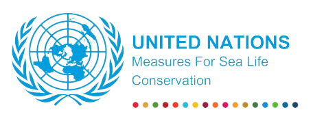
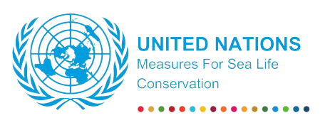

SEA LIFE & HUMANS
Life Under Water: The Hidden World Beneath the Waves
The underwater world is a realm of astounding diversity and beauty, encompassing oceans, seas, rivers, and lakes. This hidden world is teeming with life, from microscopic plankton to majestic whales. Coral reefs, kelp forests, and mangroves are just a few of the vibrant ecosystems supporting an immense array of species, playing crucial roles in maintaining our planet's health. These aquatic environments are essential for oxygen production, climate regulation, and provide food and livelihoods for millions of people worldwide. However, life under water faces significant threats. Pollution, overfishing, and climate change are wreaking havoc on these delicate ecosystems, leading to habitat destruction and the alarming extinction of species. To ensure the survival of these vital environments, it is imperative to adopt sustainable practices and bolster conservation efforts. Protecting life under water is not just about preserving beauty but also about maintaining the ecological balance essential for the well-being of our planet and future generations.
Harmful Factors Affecting Marine Life
1. Pollution
- Plastic Waste: Each year, millions of tons of plastic waste end up in our oceans. Marine animals such as fish, turtles, and seabirds often mistake plastic debris for food. Ingesting plastic can cause internal injuries, blockages, malnutrition, and even death. Plastic waste can also entangle marine life, leading to restricted movement, injury, or drowning. Efforts to reduce plastic pollution include promoting biodegradable alternatives, improving waste management systems, and encouraging public participation in beach clean-ups.
- Chemical Runoff: Agricultural pesticides, fertilizers, and industrial chemicals often find their way into water bodies through runoff. These pollutants create toxic environments that can lead to the formation of harmful algal blooms. These blooms deplete oxygen levels in the water, creating dead zones where marine life cannot survive. The toxins produced by some algal blooms can also be deadly to marine animals and harmful to humans. Strategies to mitigate chemical runoff include adopting sustainable agricultural practices, regulating industrial discharges, and creating buffer zones around water bodies.
2. Overfishing
- Depletion of Fish Populations: Overfishing occurs when fish are caught faster than they can reproduce, leading to a significant decline in fish populations. This disrupts marine food chains and can lead to the collapse of entire ecosystems. Overfishing not only affects the targeted fish species but also has cascading effects on other marine organisms, including those that depend on fish for food. Sustainable fishing practices, such as setting catch limits, protecting spawning grounds, and using selective fishing gear, are essential to prevent overfishing.
- Bycatch: Bycatch refers to the unintentional capture of non-target species during fishing operations. Dolphins, turtles, seabirds, and other marine creatures are often caught and discarded, frequently resulting in their death. Bycatch can be minimized by using more selective fishing techniques, modifying fishing gear to allow non-target species to escape, and implementing bycatch reduction devices.
3. Climate Change
- Ocean Warming: The Earth's oceans are absorbing much of the excess heat from global warming, leading to rising sea temperatures. Warmer waters affect the distribution and habitat range of many marine species, forcing them to migrate to cooler areas. This shift can disrupt local ecosystems and lead to the decline of species unable to adapt. Ocean warming also affects the timing of breeding and migration patterns. Reducing greenhouse gas emissions and protecting critical habitats are vital to combat ocean warming.
- Ocean Acidification: As atmospheric CO2 levels rise, more carbon dioxide is absorbed by the oceans, leading to increased acidity. Ocean acidification negatively impacts calcifying organisms, such as corals, mollusks, and some plankton species, by reducing their ability to build and maintain their calcium carbonate structures. This threatens the entire marine food web. To address ocean acidification, reducing CO2 emissions and enhancing marine protected areas are crucial steps.
- Coral Bleaching: Corals have a symbiotic relationship with algae called zooxanthellae, which provide corals with food and vibrant colors. When water temperatures rise, corals expel these algae, leading to coral bleaching. Bleached corals are more susceptible to disease and have reduced growth and reproductive rates, often resulting in death if stressful conditions persist. Efforts to protect coral reefs include reducing local stressors such as pollution and overfishing, and implementing restoration projects.
4. Habitat Destruction
- Coastal Development: The expansion of urban areas, tourism infrastructure, and industrial activities along coastlines often leads to the destruction of crucial marine habitats like mangroves, estuaries, and seagrass beds. These habitats serve as nurseries for many marine species, provide coastal protection, and support biodiversity. Preserving coastal habitats involves implementing sustainable development practices, establishing marine protected areas, and restoring degraded habitats.
- Bottom Trawling: Bottom trawling is a fishing method that involves dragging heavy nets across the seafloor, causing extensive damage to the benthic ecosystems. This practice destroys coral reefs, sponge gardens, and other vital habitats, disrupting the ecological balance and leading to the decline of many species. Alternative fishing methods, stricter regulations, and creating trawling-free zones are necessary to protect seafloor habitats.
5. Invasive Species
- Non-native species introduced by human activities, such as shipping and aquaculture, can become invasive and outcompete, prey on, or bring diseases to native marine species. Invasive species often have no natural predators in their new environments, allowing them to proliferate rapidly and disrupt local ecosystems. Measures to prevent the spread of invasive species include stringent biosecurity protocols, monitoring and early detection systems, and public awareness campaigns.
Protecting marine life requires a comprehensive approach that includes reducing pollution, managing fisheries sustainably, mitigating climate change impacts, and preserving critical habitats. By taking these actions, we can help maintain the delicate balance of underwater ecosystems, ensuring their health and resilience for future generations.
Policy and Advocacy in Marine Conservation
1. Promoting and Supporting Environmental Legislation
Lobbying for Stronger Laws: Advocate for the creation and enforcement of laws that protect marine ecosystems. This includes regulations to limit pollution, overfishing, and habitat destruction.
International Agreements: Support international treaties and agreements such as the United Nations Convention on the Law of the Sea (UNCLOS) and the Convention on Biological Diversity (CBD) to ensure global marine protection.
Implementation of Marine Protected Areas (MPAs): Push for the designation and enforcement of MPAs to safeguard critical habitats and biodiversity.
Incentives for Sustainable Practices: Advocate for policies that provide financial incentives for sustainable fishing, pollution reduction, and the use of environmentally friendly technologies.
2. Engaging in Advocacy Campaigns for Stronger Regulations
Public Awareness Campaigns: Launch campaigns to educate the public about the importance of marine conservation and the need for stronger regulations. Use social media, traditional media, and public events to reach a wide audience.
Petitions and Protests: Organize petitions and peaceful protests to demonstrate public support for stronger environmental protections. Collect signatures and present them to policymakers to show widespread concern.
Collaborations with NGOs: Work with non-governmental organizations that specialize in environmental advocacy to amplify efforts and share resources. NGOs often have the expertise and networks to influence policy effectively.
Influencing Policy Makers: Engage with local, national, and international policymakers to inform them about the latest scientific research and the urgent need for stronger regulations. Arrange meetings, provide briefings, and present compelling evidence.
3. Encouraging Community Involvement in Policy-Making Processes
Community Consultations: Organize town hall meetings, workshops, and public forums to gather input from community members on marine conservation issues. Ensure that the voices of local communities, especially those directly dependent on marine resources, are heard and considered in policy decisions.
Grassroots Movements: Foster grassroots movements that empower local communities to advocate for their own environmental protection needs. Provide training and resources to help them effectively engage in policy advocacy.
Participatory Governance: Promote participatory governance models that include community representatives in decision-making processes related to marine and coastal management. This can help ensure that policies are locally relevant and culturally appropriate.
Educational Outreach: Conduct educational programs to inform communities about their rights and how they can participate in policy-making. This can include workshops on how to engage with policymakers, understanding environmental laws, and effective advocacy strategies.
Raising Awareness About Protecting Marine Life
1. Education Programs
- School Curriculums: Integrate comprehensive marine biology and environmental science courses into school curriculums to educate children about marine ecosystems, their significance, and the threats they face. Incorporating hands-on activities, field trips to coastal areas, and collaboration with marine biologists can enhance learning and foster a deep appreciation for marine life.
- Community Workshops: Conduct workshops and seminars in local communities to educate people on sustainable practices. These workshops can cover topics such as reducing plastic usage, understanding the impact of overfishing, and ways to contribute to marine conservation efforts. Partnering with local experts and NGOs can provide valuable insights and practical advice.
2. Media Campaigns
- Social Media: Leverage social media platforms like Instagram, Facebook, Twitter, and TikTok to share compelling posts, videos, and infographics about marine conservation. Create engaging content that highlights success stories, ongoing challenges, and practical tips for individuals to reduce their environmental impact. Using hashtags and collaborating with influencers can amplify the message.
- Documentaries and Films: Produce and promote high-quality documentaries that showcase the beauty of marine life and the urgent need for conservation. Platforms like Netflix, YouTube, and public broadcasting channels can reach a global audience. Hosting screenings and discussions in schools, universities, and community centers can further engage the public.
3. Public Events
- Beach Clean-ups: Organize regular beach clean-up events to involve the community in hands-on conservation efforts. These events not only remove harmful debris from the environment but also raise awareness about the prevalence of plastic pollution. Partnering with local businesses and schools can increase participation and impact.
- Marine Days and Festivals: Host events dedicated to marine conservation, such as World Oceans Day celebrations. These events can feature expert talks, interactive exhibits, educational workshops, and activities like snorkeling tours or guided nature walks. Such events can inspire and educate attendees about marine biodiversity and the importance of protecting it.
4. Partnerships with Organizations
- Collaborate with NGOs: Form partnerships with non-governmental organizations focused on marine conservation to pool resources and amplify efforts. Joint initiatives can include research projects, public awareness campaigns, and policy advocacy. NGOs can provide expertise, funding, and a broader network to reach more people.
- Corporate Partnerships: Engage with businesses to promote sustainable practices and sponsor awareness campaigns. Companies can support marine conservation through corporate social responsibility (CSR) programs, funding for research, and by reducing their environmental footprint. Encouraging businesses to adopt sustainable seafood policies and reduce plastic use can have a significant impact.
5. Advocacy and Policy Engagement
- Petitions and Campaigns: Launch petitions and advocacy campaigns to push for stronger environmental regulations and policies that protect marine ecosystems. Mobilize public support through online platforms and social media to influence policymakers. Campaigns can focus on issues such as banning single-use plastics, establishing marine protected areas, and enforcing sustainable fishing practices.
- Community Involvement: Encourage local communities to participate in coastal and marine management decision-making processes. Establish community-based conservation programs that involve residents in monitoring and protecting their local marine environments. Empowering communities to take ownership of conservation efforts can lead to more sustainable and effective outcomes.
6. Citizen Science Projects
- Involvement in Research: Engage the public in citizen science projects where they can contribute to data collection and monitoring of marine life and ecosystems. Projects can include beach surveys, recording sightings of marine species, and monitoring water quality. Providing training and resources to participants ensures accurate and valuable data collection.
- Interactive Platforms: Develop online platforms and mobile apps where citizens can report sightings of marine species, pollution, and other environmental issues. These platforms can facilitate real-time data sharing and collaboration with scientists and conservationists. Gamifying the experience with rewards and recognition can boost participation.
7. Sustainable Living Practices
- Reduce, Reuse, Recycle: Promote the principles of reducing waste, reusing products, and recycling materials to minimize environmental impact. Encourage individuals to reduce their use of single-use plastics, opt for reusable items, and properly recycle waste. Public campaigns and educational programs can highlight the importance of these practices.
- Support Sustainable Seafood: Educate consumers on the importance of choosing sustainably sourced seafood to combat overfishing. Provide information on sustainable seafood certifications and guides on responsible purchasing. Partnering with restaurants and retailers to promote sustainable seafood options can influence consumer behavior.
8. Visual and Artistic Initiatives
- Art Exhibitions: Organize art exhibitions that feature works inspired by marine life and conservation themes. Collaborate with artists to create pieces that highlight the beauty of marine ecosystems and the threats they face. Such exhibitions can evoke emotional responses and inspire action.
- Photography Contests: Host photography contests that encourage participants to capture images of marine life, pollution, and conservation efforts. Displaying these photographs in public spaces, online galleries, and social media can raise awareness and showcase the importance of protecting marine environments.
By employing these strategies, we can educate, inspire, and motivate individuals and communities to take proactive steps in preserving and protecting our vital marine ecosystems. These efforts can help ensure a healthy and sustainable future for marine life and the planet.